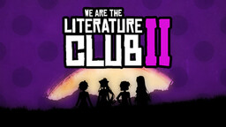

We are Literature Club 2
Uma paródia de Red Dead Redemption II da Rockstar Games no estilo DDLC, dando vida a um novo arco na história de We are Literature Club 2. Situado durante um festival altamente competitivo que gira em torno da literatura (no qual toda a cidade participa), o Clube de Literatura faz tudo ao seu alcance para coletar o máximo de literatura de todos os clubes participantes. Isso leva o presidente do clube a fazer tudo o que pode para vencer, o que às vezes resulta em sua ambição de tirar o melhor dela. No meio do fogo cruzado está o nosso protagonista, que tenta tirar o melhor partido da situação. Cabe a ti ajudá-lo a fazer as escolhas certas. Você será capaz de ajudar as outras meninas do clube a lidar com isso ou se concentrar em meios mais egoístas para resolver os conflitos que surgirem?
⬇ Download